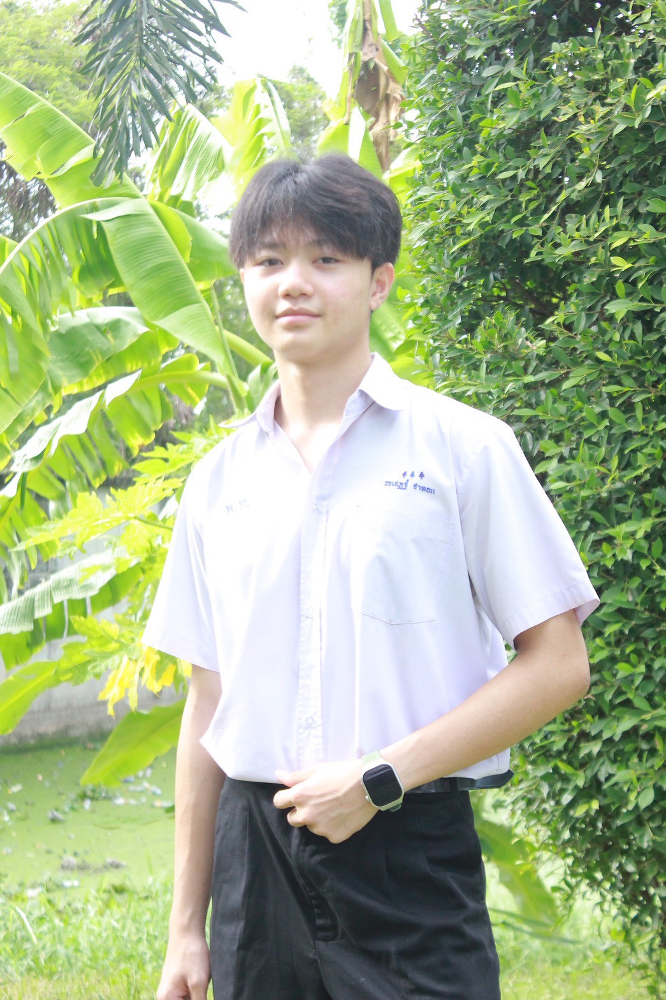

นักเรียนชั้นมัธยมศึกษาปีที่ 6/1
ชื่อ-สกุล : นาย วรเชฏฐ์ ชาทอน
ชื่อเล่น : ม่อน
วันเกิด : 23/2/2552
อายุ : 17 ปี
กรุ๊ปเลือด : O
สัญชาติ : ไทย
ศาสนา : พุทธ
• ใช้โปรแกรม Microsoft Word
• ใช้โปรแกรม Microsoft PowerPoint
• เขียนเว็บไซต์ด้วย HTML และ CSS เบื้องต้น
• ทำงานร่วมกับผู้อื่นได้ดี
🎵 ฟังเพลง
⚽ เล่นกีฬา
💻 ศึกษาการเขียนเว็บไซต์
📖 อ่านหนังสือ